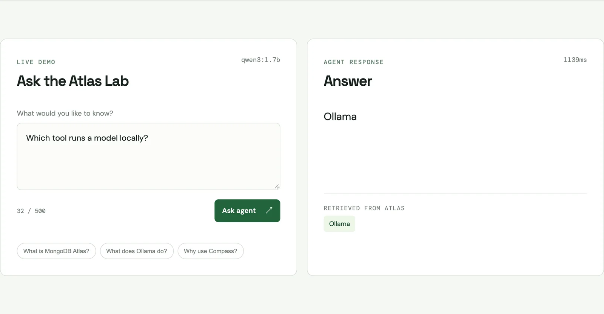
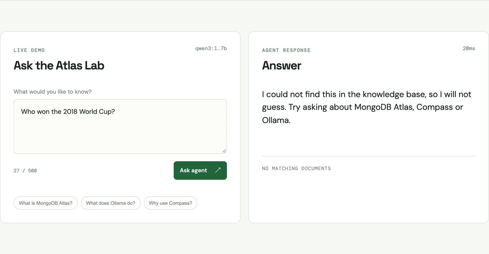
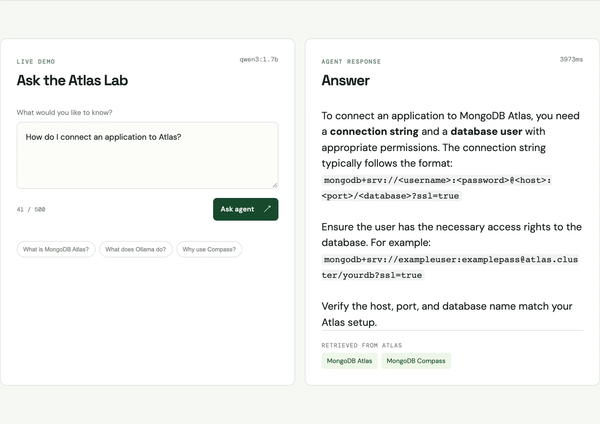
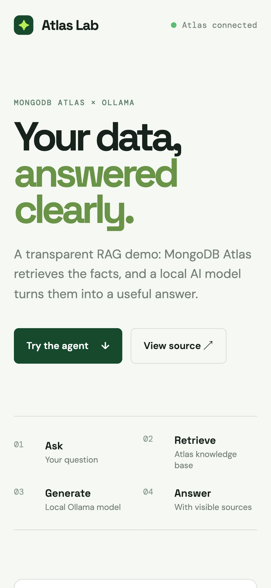

Retrieval first. Then the model.
Atlas Lab is deliberately small so every moving part of a grounded AI answer is visible: the question becomes search terms, MongoDB returns matching documents, a local model answers from those only, and the UI lists the sources. When nothing matches, the model is not asked at all.

Why it exists
"Answer only from the knowledge base" is a wish, not a control.
Asked who won the 2018 World Cup with nothing retrieved, the original app passed an empty context to qwen3:1.7b, which replied "Brazil": ungrounded and wrong. A placeholder test kept CI green the whole time.
Retrieval drops stop words and ranks documents by matched terms. If nothing is retrieved, the API returns a fixed refusal without calling the model. The UI renders model output as escaped text and lists every source. Real tests cover the retrieval rules.
Try it · runs in your browser
Watch a question become a grounded prompt
Retrieval runs live with the repository's own src/search.ts, compiled to JavaScript, over the three seeded documents. Sample answers were recorded from the real app. For other questions you can send the exact prompt to your own local Ollama.
knowledge collectionRecorded on 17 November 2026 against a local MongoDB 7 with the repo's seed data: the Atlas cluster rejected this machine's connection (TLS alert, typically an IP access-list setting), so screenshots and answers come from the same code pointed at a local database.
How it works
Small on purpose, production-minded where it counts
Visible grounding
The model only sees documents retrieved from the knowledge collection, and the UI lists them with every answer.
Refuse instead of improvise
No searchable terms or no matching documents means no model call and a fixed answer. Tested, not just prompted.
Safe API surface
Body size limit, JSON validation, per-IP rate limiting, structured errors, health check and no secrets in source control.
Ready to grow
Retrieval is isolated in search.ts, so keyword matching can be swapped for Atlas Search or Vector Search without touching the UI.
The flow, step by step
Screens
What it looks like
The real app, run locally and captured with Playwright.



Evidence
What is real, and what is not
Running the app for this page exposed an ungrounded answer, a test that could not fail, raw markdown in answers and a layout that squeezed on long replies. All four are fixed.
REAL Built and verified
- Node.js API with MongoDB retrieval, Ollama generation, rate limiting and health checks
- Answers and screenshots on this page come from the real app and a real local model
- Retrieval rules and the no-sources refusal are covered by tests in CI
SIMULATED Mocked or not built yet
- Keyword matching, not Atlas Search or vector search yet
- Three seed documents; no evaluation set for answer quality yet
- Recorded against a local MongoDB because the Atlas cluster was not reachable from this machine
Run it yourself
Run it locally
Needs Node.js 20+, a MongoDB connection string (Atlas or local) and Ollama.
git clone https://github.com/phlppgdfry/MongoDB-lab-1
cd MongoDB-lab-1
npm ci
cp .env.example .env # MONGODB_URI (Atlas or local), OLLAMA_MODEL
ollama serve & ollama pull qwen3:1.7b
npm run seed # three knowledge documents
npm run dev # http://localhost:3000
npm run check # build + testsGo deeper